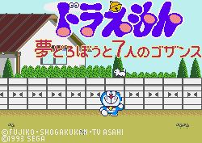

Doraemon - Genesis Games

Controls
- A button: Pick up/Throw Enemy
- B button: Jump
- C button: Fire Freeze Ray
- Start: Pause
You run around the levels collecting stars and super stars. After collecting so many super stars,
you are taken to a bonus round where you must catch as many stars as you can before time runs
out. Many enemies stand in your way, but you are armed with your trusty freeze ray. Once an
enemy is frozen, you can jump on him and use him as a platform to jump to higher areas. The
frozen enemy can also be picked up and thrown at other enemies to destroy them. If you hold
down long enough, Doraemon starts flashing indicating he is powered up for a super jump. The
background for the levels are made to look like pages out of the manga.
Anime Video Game Resource Center © 1998 by Luis A. Cruz